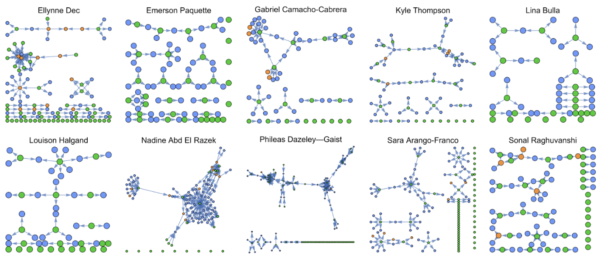
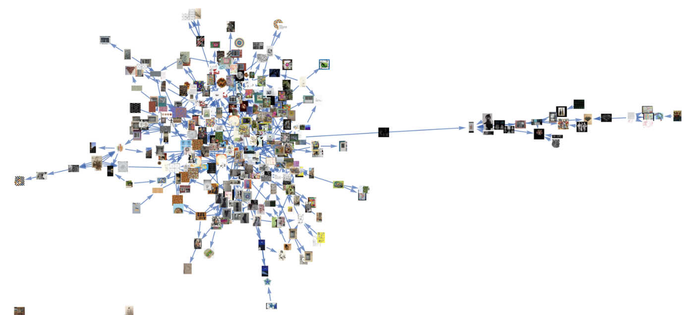
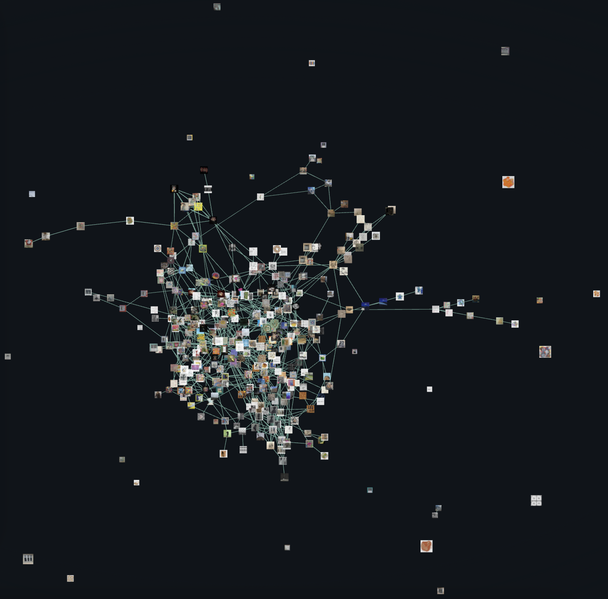

Selected works — Sara Arango FrancoObras seleccionadas — Sara Arango Franco


A collective artwork created during the Complex Systems Summer School at the Santa Fe Institute. Ten artists across four continents, working under shared constraints. Each piece feeding the next, the whole emerging without central control. The organism as art: creative structure from reciprocal limitation.
Obra colectiva creada durante la Complex Systems Summer School en el Santa Fe Institute. Diez artistas en cuatro continentes, trabajando bajo restricciones compartidas. Cada pieza alimentando la siguiente, el todo emergiendo sin control central. El organismo como arte: estructura creativa a partir de limitación recíproca.
sympoietic art organism — full project ↗


This creature evokes the unfoldings of life's tapestry: a finite set of trajectories, made materially manifest by collapsing into being by arbitrary selection from an infinite sample space. Such mediation or manifestation processes are path-dependent and have a fortuitous component. The will of creation, the will of life, acquires, with this exercise, a better metaphor than studio art: visual works become analogues for individual biological beings, and the porousness and interdependence to other beings in both contexts is made more explicit. This work challenges common notions of identity and authorship, and even death itself.
This exercise highlights the banality of entertaining visual works without a systemic feel for their peers. No living being came to be on its own or is not part of the woven fabric of life. Nothing ever comes from nowhere. No creation ever does. The role of the artist is that of a translator or mediator, and, to some extent, a good translator adapts form for it to be fertile in its context. Intentional design is replaced by intuitive, ever-evolving mutual interactions. This is a game of agency. (Mathematical) chaos arises.
If DNA is biology's information record, what does a unit of information mean in a sympoietic (visual) art organism? Proximity in this artistic network, that is, inspiration, is clearly not merely visual. What is a visual informational unit? What would its role be in the evolution of such organisms? Self-referentiality is a likely outcome in organic (non-algorithmic) conditions, if a comparison with life aiming to self-perpetuate is valid. These seem like important questions in the times of generative AI.
Can this tagged dependency network serve as a training set for a study of visual kinship as studied by visual complexity? Would such a framework be any relevant for these purposes? By then we'd, of course, then have to know what visual complexity is.